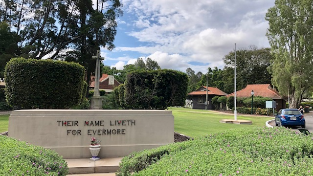
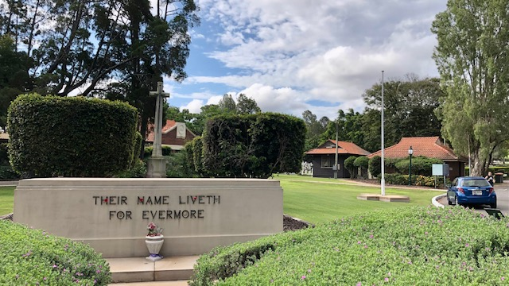

Friends of Toowong Cemetery
Friends of Toowong Cemetery is a volunteer group that discover and share the history and stories of Toowong Cemetery.
 
 
The heritage‑listed Toowong Cemetery is the largest cemetery in Queensland. The first burial was of Governor Samuel Blackall on 3 January 1871. Read his and hundreds of other stories about the people who shaped Brisbane, Queensland, and Australia's history.
On this site you'll find information about:
- the cemetery's history and the stories of people remembered here.
- headstones including headstone symbols, signs and archaeological digs.
- research resources including how to find graves, and an index of people in our stories.
- our regular guided heritage tours and self‑guided walks.
- Friends of Toowong Cemetery - what we do, what we've done, and how to join in.
The cemetery is maintained by the Brisbane City Council.
Things to do at Toowong Cemetery
At Toowong Cemetery you can:
- take a self-guided walk and explore the stories of people who shaped our local history.
- search for secret headstone signs and share your discoveries.
- join us on one of our regular guided heritage tours.
- discover the meaning of headstone symbols at the Symbolism display.
Visit Toowong Cemetery
The Toowong Cemetery Main Entrance was designed by the Colonial Architect F.D.G. Stanley and erected in 1873-1874.
Driving
If you're driving to the cemetery, it has two entrances:
- The main entrance at Frederick Street, Toowong, can only be entered via a slip road beside the Toowong roundabout, approaching from the west.
- The back entrance, opposite 26 Richer Street, Toowong is much easier to access.
Parking is available inside the cemetery.
Walking
If you're walking, in addition to the entries above, you can enter via:
- the pedestrian ramp from Mt Coot-tha Road, opposite the Mt Coot-tha Botanic Gardens. Turn right at the top of the ramp and walk downhill to go to Canon Garland Place.
- Frederick Street gate (opposite Sleath Street) that leads onto Steel Rudd Avenue (previously 4th Avenue).
- the many informal entries off Birdwood Terrace.

Toowong Cemetery Pedestrian Entrance off Mt Coot-tha Road. Bus stop 17, Mt Coot-tha Rd is nearby.
Public Transport
If you're using public transport to get here, use the TransLink Journey Planner to plan your trip. Be aware some results tell you to walk across the road at the Toowong roundabout - this is not safe and you may need to walk a long way to find a safe place to cross Milton Road or the Western Freeway. Options are:
- cross Milton Road at its intersection with Morley Street.
- cross the Western Freeway using the Canon Garland Overpass, a bike and walking bridge accessed from Anzac Park.
- choose a bus that avoids the need to cross major roads (e.g. Routes 471, 598, 599).
When you arrive
If you enter the main entrance, you'll find:
- Canon Garland Place named after Canon David John Garland. The Flagpole here is the departure point for our guided heritage tours.
- a Museum operated by the Friends of Toowong Cemetery, and opened before and after our guided heritage tours
- the Office, where Brisbane City Council staff can answer your enquiries and help locate graves and memorial sites.
- Toilets - the only ones available in the cemetery.
{kind=link}
The Stone of Remembrance, Cross of Sacrifice, and Flagpole in Canon Garland Place
If you enter via the Richer Street back gate, to get to Canon Garland Place:
- turn right into Dr. Lilian Cooper Drive (previously Boundary Road) and continue to the Shelter Shed.
- veer left at the Shelter Shed down the one‑way William Brown Avenue (previously 14th Avenue).
- at the end, turn right into Emma Miller Avenue (previously 8th Avenue) to arrive behind Canon Garland Place, where you can park on the right side of the road.
Toowong Cemetery Map
Toowong Cemetery Portion Map
There are 34 Portions in the cemetery, numbered 1 to 30 and also 2A, 7A, 15A, 29A. Portions contain many sectons. Each section can contain up to 80 graves. The graves in a section are usually in two rows.

Toowong Cemetery Map showing Portions, Sections and key features). Toowong Cemetery Area Map © Brisbane City Council 2022, used under Creative Commons Attribution 4.0 Licence.
Toowong Cemetery Road Map
Cemetery Road Warnings
- Walter Hill Drive is one way uphill from Emma Miller Avenue to Dr. Lilian Cooper Drive.
- William Brown Avenue is one way downhill from Dr. Lilian Cooper Drive to Emma Miller Avenue.
- 5th Avenue is very steep from Steele Rudd Avenue up to Francis Forde Avenue near the corner of Frederick St and Birdwood Tce. 5th Avenue is not shown on Google Maps.
Road Name Changes
Some cemetery road names have recently been changed to the names of notable people buried nearby. Not all maps and signs in the cemetery have been updated to reflect these changes:
| New Road Name | Old Road Name | Notes |
|---|---|---|
| Walter Hill Drive | Boundary Road | running parallel to Mt Coot-tha Road |
| Dr Lilian Cooper Drive | Boundary Road | running parallel to Richer Street |
| Pride of Erin Drive | Boundary Road | running parallel to Birdwood Terrace |
| Francis Forde Avenue | Boundary Road | running parallel to Birdwood Terrace closest to Frederick Street |
| Peter Jackson Parade | Boundary Road | running parallel to Frederick Street furthest from the main entrance |
| Soldiers Parade | Boundary Road | running parallel to Frederick Street closest to the main entrance |
| Steele Rudd Avenue | 4th Avenue | |
| Walter Ralston Avenue | 7th Avenue | |
| Emma Miller Avenue | 8th Avenue | behind Canon Garland Place |
| Charles Heaphy Drive | 8th Avenue | from the Shelter Shed to Emma Miller Avenue |
| Pat Hill Drive | 8th Avenue | from the Richer Street end to the Shelter Shed |
| O'Doherty Avenue | 11th Avenue | |
| Elizabeth Dale Walk | 12th Avenue | |
| Garland Avenue | 13th Avenue | |
| William Brown Avenue | 14th Avenue | |
| Federation Avenue | 15th Avenue |
Find a grave
Find a grave in Toowong Cemetery in 5 steps:
- Search for a grave using the Brisbane City Council Grave location search.
- Locate the grave on the Toowong Cemetery Map.
- Plan your visit to Toowong Cemetery.
- Ask Friends of Toowong Cemetery to help you locate the grave on-site or take a digital photo.
- Ask the staff at the Toowong Cemetery to help you locate the grave on-site.
Attractions nearby
Combine your visit to Toowong Cemetery with a visit to other nearby attractions:
- Mt Coot-tha Botanic Gardens is a 15 minute walk from the cemetery. Our favourite attractions include:
- Mt Coot-tha Lookout - catch the 471 bus from the Mt Coot-tha Botanic Gardens.
- Anzac Park a long walk via the Mt Coot-tha Botanic Gardens, then across Canon Garland Overpass into Anzac Park.
- Mt Coot-tha Reserve - drive to picnic areas, bush walks, or mountain bike riding. J. C. Slaughter Falls and Simpson Falls are our favourites.
- Mt Coot-tha Events - there's always something happening around Mt Coot-tha.

Their Royal Highnesses, the Duke and Duchess of York enjoy a morning at Mt. Coot-tha, April 1927 - State Library of Queensland. The Duke of York was later King George VI, and the Duchess of York was later Queen Elizabeth the Queen Mother.